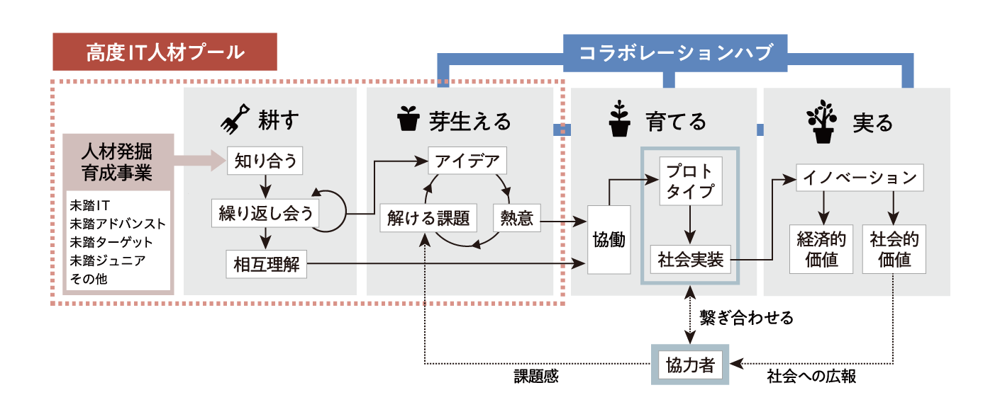

PROJECTS
プロジェクト概要
一般社団法人未踏は、未踏クリエータをはじめとする「高度IT人材のプール」を構築し、社会課題を解決するためのプロジェクトを生み出す「イノベーション・プラットフォーム」です。 上記を実現するために、テクノロジーを核としたソリューションを生み出すための「高度IT人材プール」と、高度IT人材のソリューションが社会に実装されるための「コラボレーション・ハ ブ」を構築します。高度IT人材プールの中から、ある特定の社会課題を解決するための「強い情熱」と「適切なスキル」を持った人材が、その社会課題を解決するためのソリューション (MVP)を作り、実際に社会に実装されるプロダクト・サービスになるように支援します。
プロジェクト発生成長のプロセス
プロジェクト紹介
未踏会員からの提案に基づいて発生成長したプロジェクトを紹介します。
未踏ジュニア
未踏ジュニアとは、独創的なアイデア、卓越した技術を持つ17歳以下の小中高生及び高専生を支援するプログラムです。 未踏事業という、経産省所管の独立行政法人情報処理推進機構が主催し実施している、優秀な25歳以下の若者を支援するプログラムがあります。そして、そのOB・ OGがボランティアで運営しているのが、未踏ジュニアです。
未踏ジュニアの成長のプロセス
未踏社団発の代表的なプロジェクトである「未踏ジュニア」。
この未踏ジュニアプロジェクトが どのような想いから生まれ、立ち上がり、プロジェクトとして成長していったのか、立案者であ る荒川理事に語ってもらいました。

ワーキンググループ一覧
Medical crisis研究会
Medical Crisis研究会では、未踏コミュニティを中心として高度情報系人材と医療分野を橋渡しをする活動を行います。まずは「医療用情報ツールのアイディア提供」や「情報系人材のための医学教育」から始め、参加者提案に基づいて発展させます。お気軽にご参加下さい。
未踏研究会
未踏研究会は従来の学会の枠に留まらない自由で未踏的な研究活動の基盤となる研究会です。活動の場となるワーキンググループの設立や研究会の活動を支援することで、研究成果の発信・社会還元や社団内外の創造的人材との交流の促進を目的としています。
IoT研究会
未踏人材はソフトウェアについての造詣が深い人が多い一方、ハードウェアの知識をもつ人はあまり多くありません。未踏IoT研究会では、未踏人材同士がハードウェアの知識を共有することで、IoT製品など新たな分野を開拓できるようになることを目的として、開発合宿や勉強会を実施しています。
機械学習ビジネス研究会
機械学習のアルゴリズムやインフラについては様々な場所で勉強会等が開催されていますが、ビジネス面において議論できる場所は実はあまり多くありません。 機械学習ビジネス研究会は、既存のビジネスにおいてどのような機械学習が利用されているのかについてディスカッションする研究会です。
起業WG
未踏卒業後の選択肢に「起業」が少ない理由に、起業への誤解やそもそも選択肢が念頭にないことが挙げられます。そこで、未踏クリエイターの起業支援を目的に、本WGは設立されました。主な活動は、起業に関する公正な情報の提供や信頼できる人材の紹介、カジュアルな情報交換の場の提供などです。
プログラミング教育WG
未踏コミュニティを中心として、主にK-12段階でのプログラミング教育及び将来の未踏人材育成につながる活動を行います。短期的には、小中高生対象の未踏説明会や未踏ジュニアの企画運営を行い、日本のIT人材の発掘育成に寄与することを目的としますが、活動はこれに限るものではありません。
生産性向上WG
「創造的人材が創造的に活動できる時間の増加」を目的としたWGです。現在発起人の西尾は「ソフトウェアによる生産性向上より、未踏社団や研究会/WGの仕組みづくりが優先度が高い」と考えて、情報の収集と流通を中心に活動しています。
遠隔IT飲み会WG
未踏社団の立ち上げ時期に、みんな一緒に飲もうという機会がありました。ところが竹内だけがその場に居合わせることができず、Skypeで参加しました。飲み会が進むにつれ、いろいろな問題が明らかになりました。これらの問題を技術的に解決し、よりよい遠隔飲み会ができるようにしようというのが「遠隔IT飲み会WG」発足の動機です。
その他プロジェクト一覧
AIフロンティアプログラム
AI技術を駆使してイノベーションを創出することのできる独創的なアイデアや技術を有し、これらを活用する優れた能力を持つ若い人材を、公募等を通じて発掘したうえで、AI分野における実践的能力を高度化するために必要な資源の提供に加え、伴走型で研究開発支援や技術・経営等に関するアドバイスの提供等の支援を行い、突出した人材を育成します。